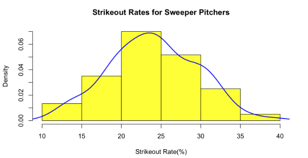
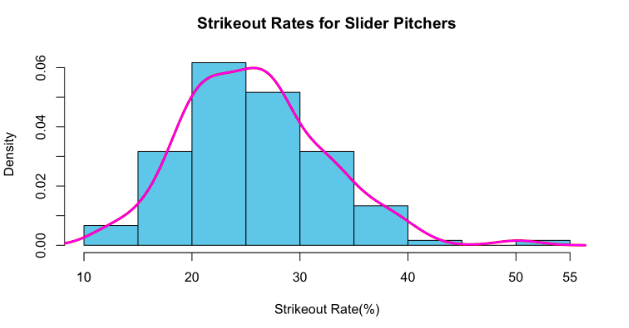
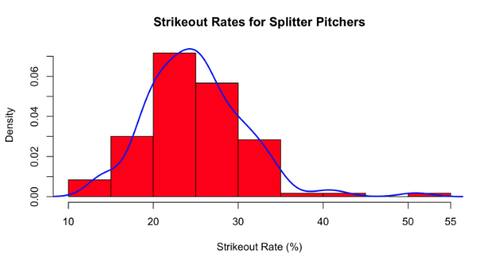

Settling the Debate: What is the Hardest Pitch to Hit in Baseball?
by A. Carreno
Posted on 07/14/2023
Ted Williams, one of the greatest hitters in baseball history, once said that hitting a baseball is the single hardest thing to do in sports. He explained this by saying: “a round bat, round ball, sliders, curveballs, knuckleballs, upside down and a ball coming in at 90 to 100 miles an hour, it’s a pretty lethal thing.” It’s no secret that successfully hitting a baseball is a difficult thing to do though. If you can do it just 3 out of 10 times, you’re considered to be one of the better hitters in the league. That fact alone says enough about how hard it is. However, sometimes hitting a baseball is harder because every pitcher has an arsenal of different pitches. In his quote, Williams points to three specific pitches that are notorious for being tricky to hit: the knuckleball, the curveball, and the slider. Still, this begs the question: which pitch really is the hardest for a batter to hit? Is it one of those aforementioned three? Or is it another pitch? These questions are precisely what this piece aims to address.
First, let’s take a look at some general statistics to determine if there are any pitches we can eliminate right off the bat (no pun intended). But before we dig into those, I will mention that I won’t be considering the eephus, slow curve, or screwball. These pitches are practically nonexistent in today’s game and are used so rarely that it would be hard to break down how hittable they are compared to other pitches as a result of small sample sizes. I technically should include the knuckleball in this list, but because there are a few pitchers that specialize in that pitch and throw it almost exclusively, there is enough data to calculate the numbers we’re going to look at. The first thing I did was calculate the metrics I like to call the contact rates for these pitches: whiff rate and swinging strike rate. The former is the percent of swings and misses out of total swings. The latter is the percent of swings and misses out of all pitches seen, not just the times the batter swung. I considered the ten most common pitches in my analysis, calculating the aggregate whiff and swinging strike rates for all of these pitches over the last fifteen years. Below is a table with the results.
| Pitch Name | Lg Whiff% | Lg SwStr% |
| 4-Seam Fastball | 18.88 | 8.75 |
| Sinker | 13.52 | 6.08 |
| Cutter | 22.83 | 11.38 |
| Slider | 33.54 | 16.21 |
| Sweeper | 34.43 | 16.01 |
| Changeup | 30.07 | 15.40 |
| Knuckleball | 22.08 | 10.60 |
| Curveball | 29.93 | 11.93 |
| Splitter | 33.83 | 17.83 |
| Knuckle Curve | 32.88 | 13.59 |
(Data: Baseball Savant and Fangraphs)
As expected, fastballs and fastball variations (cutters and sinkers) have the lowest whiff and swinging strike rates. A potential reason for this is because these pitches are among the most common, meaning batters are pretty used to seeing them. That said, I think the main reason they have such low rates compared to other pitches is because of predictability. As we’ll see later on, these pitches have little movement, making them very predictable for hitters, especially when they are expecting them to be thrown. There is not much a pitcher can do to throw these pitches differently. The biggest surprise for me from these results, however, is the knuckleball having the third lowest swinging strike rate and whiff rate. It actually ranks as easier to make contact with in general than a cut fastball. Knuckleballs have garnered a reputation for being difficult for batters to face over the last 15 years with pitchers like R.A. Dickey winning a Cy Young primarily using it and Tim Wakefield having an incredibly successful career with the Red Sox throwing it. Knuckleballs also directly contradict my statement about predictability because they are virtually impossible to predict. Not even the pitcher entirely knows where it’s going when he throws a knuckleball. However, I think the discrepancy in my reasoning and the actual results is simple to explain: knuckleballs are very slow. They are by far the slowest pitch in baseball (that is not the eephus or slow curve) so batters have time to make adjustments to the pitch’s movement to at least get the bat on it. Still, that does not necessarily mean they often make good contact with the pitch as we’ll also see later. Just by looking at this table though, the slider, sweeper, and splitter all stand out as being difficult to hit. They each have swinging strike rates of at least 16% and whiff rates of at least 33.5%. This means over a third of all swings against these pitches is a swing and miss; really a crazy statistic if you think about it. Let’s now take a quick look at how these pitches move.
| Pitch Name | Median Spin Rate (rpm) | Median Movement (in) |
| 4-Seam Fastball | 2285 | 7.75 armside |
| Sinker | 2154 | 23 down |
| Cutter | 2388 | 2.8 gloveside |
| Slider | 2406 | 4.9 armside, 36.2 down |
| Sweeper | 2572 | 14.8 gloveside, 39.6 down |
| Changeup | 1756 | 14.9 armside, 30.8 down |
| Knuckleball | N/A | see below |
| Curveball | 2511 | 9.5 armside, 52.9 down |
| Splitter | 1395 | 12.1 armside, 33.2 down |
| Knuckle Curve | 2482 | 6.3 gloveside, 50.9 down |
(Data: Baseball Savant and Fangraphs)
The above table displays the median movement of each pitch we are considering in determining which is the hardest to hit. I looked at the median spin rates for each pitch and four types of movement (vertical, downward, arm side, and glove side). If a pitch has two kinds of movement, it is harder for a batter to predict than a pitch that only has one kind of movement. And of course, the more inches on average the pitch moves, the harder it becomes for a batter to track and adjust to. According to the table, the standouts are mostly the same here with a couple of differences. In terms of total median inches of movement, the knuckle curve, curveball, and sweeper top the list. I would also add the splitter and changeup to that list since their movement is more evenly divided and also because they are two of just three pitches that on average move at least ten inches in multiple directions. The slider also possesses a solid amount of movement, but is short of belonging in the top echelon. And the fastball family of pitches, as I previously made note of, falls considerably behind. Each only moves in one direction and not even by a large amount. I’ll also add that the knuckleball technically moves in four directions on average, but because the pitch is so varied and unpredictable in terms of movement, it is really hard to judge how much insight the tracking data gives us here. Now that we’ve taken a closer look at how exactly these pitches move, let’s see if greater movement correlates with worse hitting performance against.
How hittable a pitch is mostly comes down to how easy it is to make contact with it, but that is not the only factor that should be considered. In baseball, successful hitters don’t just make contact, they make quality contact that results in baserunners, and baserunners often result in runs that win teams games. To see the kind of contact being made against these pitches let’s take a look at some more aggregate rates: line drive, ground ball, fly ball, barrel and hard hit rates. These rates are self explanatory: each tells us how often the contact made against one of the pitches falls into each category. In particular, barrel rates measure the percentage of batted ball events that have a batting average of at least .500 and a slugging percentage of .1500 (essentially, they are very likely to be a hit or even a home run), and hard hit rates measure the percentage of batted ball events with an exit velocity of at least 95 miles per hour. Let’s check out the table below.
| Pitch Name | Ground Ball % | Fly Ball % | Line Drive % | Barrel % | Hard Hit % |
Usually speaking, pitchers want to achieve above average ground ball rates and low barrel and hard hit rates. This is not an absolute rule as there have been many successful pitchers that induce more fly balls or that do give up a fair share of hard contact, but those are not the norm. Looking at this table, the pitches that seem hardest to make quality contact with are the knuckleball, splitter, slider, and sweeper–more or less what we have come to expect. I mentioned the knuckleball being difficult to hit well earlier, and this table further reinforces that point. You can often make contact with it, but it is difficult to hit it hard often. The other three pitches have been at or near the top of the leaderboard for everything else we have looked at, and looking at the table below for general batting performance, that does not change.
| Pitch Name | xBA* | xOBP* | xSLG* | xwOBA* | K% in Putaway Counts |
Before analyzing this table, there are a few definitions to unpack here. The “x” in front of the first four metrics stands for “expected.” This means that the batting average against these pitches, for example, is calculated not based on the actual results or hits against it, but the expected odds of being a hit that each ball that was put in play against the pitch has. Secondly, the last statistic is measuring the strikeout rate of each pitch in putaway counts: this is how often throwing that pitch results in a strikeout when the count is significantly in the pitcher’s favor (0-2 and 1-2, to be exact). From the table, we can pick up on a few things. When the first four metrics for each pitch (i.e. the expected batting stats against) are added, the sweeper, splitter, and knuckle curve have the lowest combined total closely followed by the slider and curveball. Batting performance against the former three is especially anemic. In terms of strikeout rates, the knuckle curve is actually first at a nearly whopping 38%, but the sweeper and slider are right behind it.
Considering everything we’ve seen, it seems as though arguments could be made for multiple pitches. That said, I promised a clear winner, so we will narrow it down to one pitch. Before that though, let’s first narrow it down to three and conduct one final test to determine the winner. Like I said, the pitches that have consistently come up as above average or even the best in every single assessment thus far have been the slider, sweeper, and splitter. One could definitely make an argument to include the knuckle curve over the splitter, but the knuckle curve is far behind the splitter in swinging strike percent, almost 4 percentage points in fact. That figure may not seem like a lot, but it does make a huge difference considering the sheer sample size as swinging strike rate considers all pitches thrown. This makes the splitter harder to hit in general, so we will tab it as the final contender.
In order to decide which of these pitches is hardest to hit, we will run one final test: how high is the strikeout rate usually of pitchers that throw these pitches at a high rate in putaway counts. When you’re ahead of the batter as a pitcher, you want to be able to throw pitches that can consistently finish the batter off more often than not. Usually, every pitcher has an “out” pitch, or a pitch they use more than others in putaway counts. Additionally, the vast majority of strikeouts happen in putaway counts. Therefore, the logic is sound if we claim that the pitch that pitchers use most successfully to strikeout batters in putaway counts should be harder to hit than the others. To run this test, we’ll look at the strikeout rates of the top 30 pitchers over the last four seasons (30 for each season) that used the sweeper, slider, and splitter most often in putaway counts. Let’s start by conducting this analysis on the sweeper.
This histogram shows the spread and frequency distribution of the strikeout rates of pitchers who use the sweeper most often in putaway counts. It nearly follows a normal distribution, which is pretty interesting. The median strikeout rate for sweeper pitchers is 23.95% and the mean is an even 24%. The graph is unimodal and not really skewed by any outliers. In addition, 15% of the observations are strikeout rates above 30%, which is considered a very high rate. The average strikeout rate for an MLB pitcher is about 22%, so we can safely conclude that a sweeper first pitcher in putaway counts has an above average strikeout rate on average. Let’s see how these results compare to the slider.
The distribution of this histogram is right skewed as there are a few outliers in the data. That said, despite these outliers, it seems the slider passes the sniff test. The mean and median rates are 25.15% and 25.81%, respectively. The difference between the mean and median for the slider is considerably higher than what it is for the sweeper, but not enough to make us question what the typical K rate for slider pitchers really is. Finally, 24.2% of slider pitchers have K rates over 30%, far exceeding that of sweeper pitchers. This could be because there are simply more talented pitchers that use sliders as opposed to sweepers, but I think the difference is large enough for us not to concern ourselves too much. Now, let’s finally see what the results are for the splitter.
Like the previous histogram for the slider, the distribution here for the splitter is slightly right skewed as a result of some outliers on the tail end of the dataset. That said the skewness seems to be less than that of the slider considering the mean and median values are 25% and 24.75%, respectively, meaning there is a fairly lower difference between the mean and median values of the splitter as opposed to the slider. 16.67% of the observations are K rates over 30%, which bests the sweeper, but is still a far cry from the 24.2% the slider boasts.
Given all this data and analysis then, what is the final conclusion? What is the hardest pitch to hit? As I stated before, you can make an argument for multiple pitches and even after this final test, I think you still can. That said, in my opinion, the hardest pitch to hit in baseball right now is the sweeper. The sweeper is a fairly new invention that didn’t exist 30 years ago and it has taken the baseball world by storm. To briefly recap how difficult it is to hit: it has the lowest total combined xBA, xOBP, xSLG, and xWOBA out of all pitches we saw and the only xBA under .200, which indicates an incredibly low contact rate (batting average may be a flawed statistic, but it is a decent barometer for contact). Additionally, it also has the second lowest hard hit rate after the knuckleball at roughly 29%, the highest whiff rate of any pitch at 34.43%, and it moves 39.6 inches downard and 14.8 inches glove side on average. No other pitch moved so many inches in multiple directions on average. The only real knock on the sweeper would be the final test; sweeper pitchers had the lowest average K rate at 24%. That said, this K rate is still above average and not insanely far behind the slider and splitter. The former is about 2 percentage points better and the latter is about 1 percentage point better in terms of K rate. Considerable difference, but not insane and sweeper pitchers still have a decent rate. As such, all things considered, and though it is certainly close, I believe the sweeper to be the hardest pitch to hit in baseball. So to all you aspiring pitchers, learn how to perfect a sweeper and maybe you can make a living off it.
* Despite the sample being data from 2008 to the present, note that these statistics are only available during the Statcast era (2015-present).